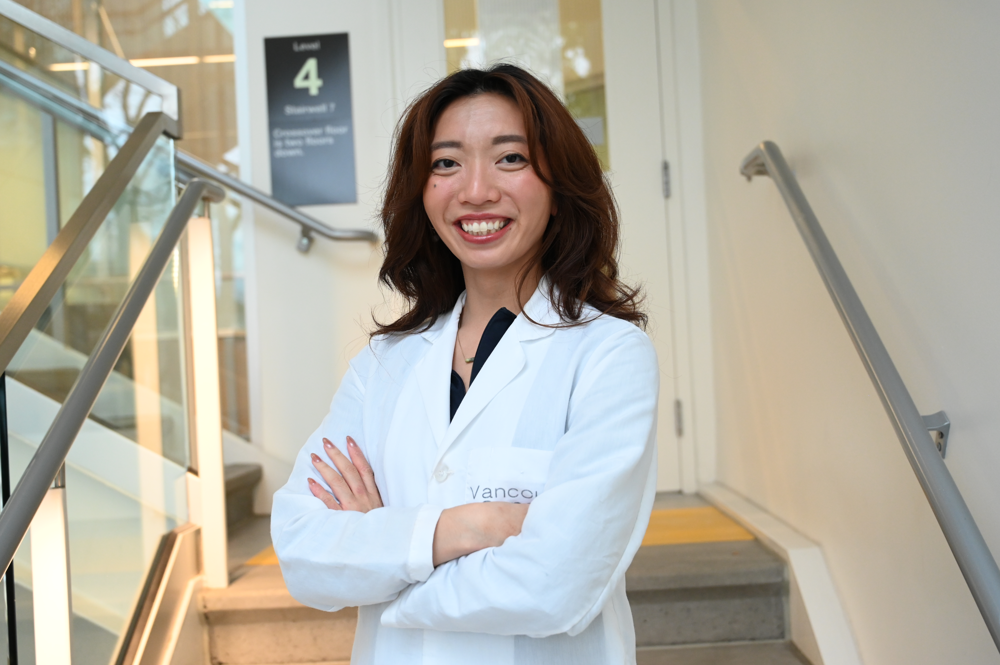

Our Research Focus
Identifying Motifs that Drive Nuclear Hormone Receptor Condensates

Figure created by trainee Louise Ramos
We use various computational tools to uncover how protein sequence motifs influence the formation and function of transcriptional condensates. By examining patterns within protein sequences and comparing them to predicted phase-separation behavior, we can identify regions that help condensate assembly, coactivator recruitment, or changes in gene activity. To systematically map these relationships, we developed ProPat, a tool that profiles charge and amino acid composition patterns across nuclear receptor sequences and integrates them with predicted phase-separation propensity scores. By ranking and aligning these motifs at both local and whole-protein scales, ProPat allows us to prioritize the sequence features most likely to contribute to condensate nucleation or stability. Findings from these analyses are further validated through experimental work using both cell-based and cell-free assays.
Studying the Role of Condensates in Gene Regulation in Cancer

Figure created by trainee Louise Ramos
Our lab studies transcriptional condensates, which are dynamic assemblies of biomolecules that organize the gene expression machinery in the nucleus. We aim to understand how these condensates control gene expression and to distinguish between condensate-dependent and condensate-independent programs in normal cells versus cancer. We explore the genomic features that promote condensate formation and stability, including DNA motif sequence, motif density, and chromatin context. Using the androgen receptor (AR) and its treatment-resistant splice variants in prostate cancer as model systems, we study how these transcription factors assemble into condensates to drive oncogenic gene programs. We also identify the cofactors and coregulators incorporated into AR condensates and aim to characterize the composition of these condensates across different disease stages to better understand cancer progression and treatment resistance. Our research seeks to uncover how condensate-dependent gene expression contributes to tumour growth, therapy resistance, and metastasis, providing new insights into cancer biology and potential therapeutic strategies.
Identification of Condensate Modulators as Novel Therapeutic Targets for Cancer

Figure created by trainee Louise Ramos
Many transcription factors and cancer drivers rely on condensates to activate specific oncogenic programs. These condensates are very selective in their composition, and this selectivity extend to drug therapeutics. Some treatments fail because they are excluded from reaching their targets, which may be shielded within condensates. By disrupting oncogenic condensates or stabilizing tumour-suppressor ones, we may identify more effective strategies for treating resistant cancers. We combine high- content imaging, in vitro biophysics, and cell-based experiments to identify compounds that alter condensate behavior. Automated microscopy enables the screening of chemical libraries and the detection of changes in condensate number, size, or dynamics. Promising compounds are then tested with purified proteins to determine whether they directly affect phase separation or interactions with DNA or cofactors. In parallel, cell-based assays measure how compound-driven changes in condensates impact transcriptional activity, chromatin engagement, and relevant cancer phenotypes.
Gobind Khorana Protein Engineering Core
This Core provides expertise and infrastructure to support researchers with protein target expression and purification, biophysical characterization, and ligand screening and validation.
GKPEC Site →Our Team

Nada Lallous
Assistant professor, University of British Columbia/Senior Research Scientist, Vancouver Prostate Centre/ Director, the Gobind Khorana Protein Engineering Core.
As an Assistant Professor, I oversee the training and mentorship of my team members, guide the scientific vision and research priorities of my group, and lead efforts to secure funding to sustain and expand our research program. As Director of the Gobind Khorana Protein Engineering Core, I oversee ongoing projects and ensure that milestones and deadlines are met.
In addition to my scientific work, I enjoy reading (mainly fiction), attending plays and comedy shows, painting, pottery, and building Lego sets. I am also a proud mom of two amazing kids!

Rafailia Beta
Postdoctoral Fellow
I investigate RNA-based regulatory mechanisms and their roles in gene expression and disease progression aiming to uncover molecular mechanisms that can inform the development of novel therapeutic strategies. Outside the lab, I enjoy science communication, mentoring young colleagues, and unwinding through painting and swimming.

Mailyn Terrado
Research Associate
I primarily work in the Protein Core Lab, where I perform protein expression and purification from both bacterial and mammalian systems, as well as biophysical characterization such as binding assays and protein quality assessments. In the Lallous research group, my work focuses on androgen receptor (AR) expression and purification.
I spend a lot of time adventuring with Lilo, a goldendoodle—we love discovering new parks and neighborhoods. When I’m not out with him, you’ll usually find me cross-stitching, solving puzzles, reading, or teaching myself how to crochet.

Shabnam Massah
Research Associate
I study how transcriptional condensates regulate oncogenic gene programs to drive prostate cancer progression, using a range of molecular and cellular biology approaches.
Outside the lab, I enjoy playing music and staying active through regular exercise.

Nicholas Pinette
Transition Student
I am a laboratory technician in Dr. Nada Lallous’s lab at the Vancouver Prostate Centre, where I study how the androgen receptor (AR) forms biomolecular condensates through liquid–liquid phase separation in prostate cancer. My work integrates molecular biology, microscopy, and computational analyses to understand how these condensates regulate transcription and contribute to disease progression.
Outside the lab, I’m an avid photographer who enjoys capturing nature and cityscapes around Vancouver. I’m also a lifelong hockey fan and player, always ready to join a local game or cheer on the Canucks.

Louise Ramos
Ph.D. Candidate
I am a final year Experimental Medicine PhD candidate at UBC, co-supervised by Dr. Nada Lallous and Dr. Mads Daugaard. My work primarily involves the validation of novel inhibitors for cancer treatment and developing a physiologically relevant in vitro models to study cancer.
In my free time I love to play volleyball (both indoor and outdoor when its nice), painting, reading and discovering new music.
Alumni
Undergraduate
- Winsor Zhu2026
- Vanessa Arianto2025
- Francesco Babini2025
- Carolina Saldaña Galván2024
- Lillian Hayes2024
- Dian Liu2024
- Mira Saba2023
- Tian Hao (Alex) Huang2023
- Alex Bembridge2022
- Sofia Kochkina2022
- Nabeel Khan2021
- Alima Suleimenova2021
- Ana Parra Nunez2020
- Tiffany Chan2019
- Afyz Mohamedali2019
- Bei Sun2019
- Christophe Sanchez2019
Graduate
- Jane Foo2024
- Nicholas Pinette2024
Postdoc
- Shabnam Massah2025
- Sumanjit Datta2025
- Maitree Biswas2022
Research Associate/Assistant
- Maria Guo2024
- Hanadi Ibrahim2023
- Joseph Lee2022
- Helene Morin2022
- Neetu Saxena2020
- Subramania Kolappan2020
Publications
Lab Gallery
A glimpse into life at the Lallous Lab — our science, celebrations, and community.


Latest Lab News
Code of Conduct
All lab members are expected to follow the code of conduct
Join Our Team
We are always looking for passionate and talented researchers at all levels (postdoctoral, graduate, and undergraduate).